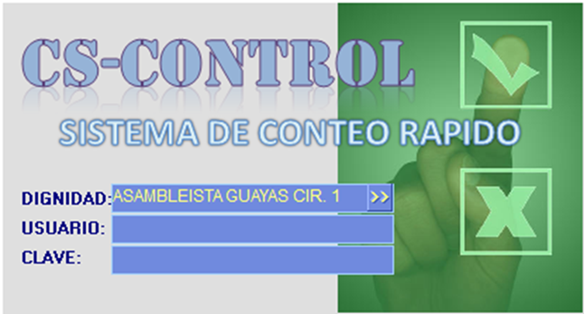
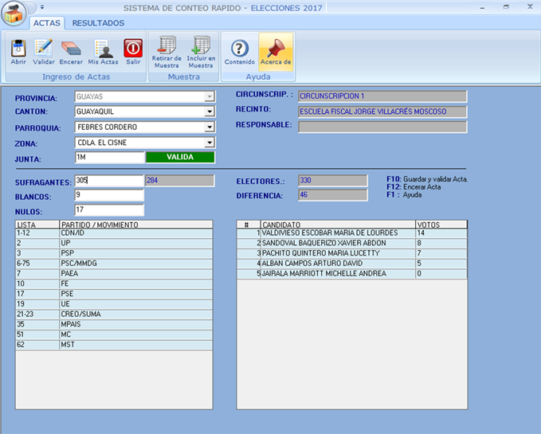
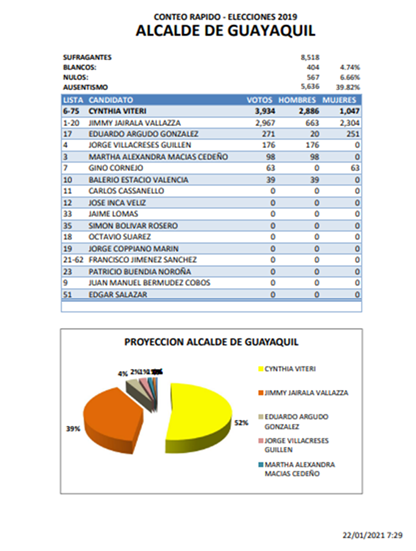
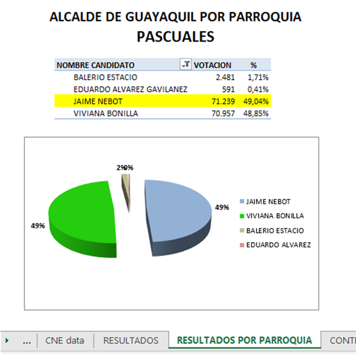
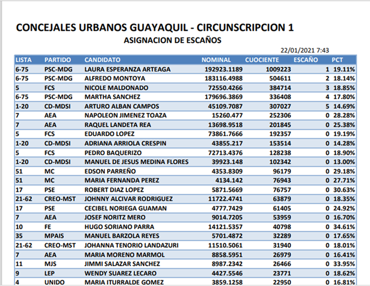
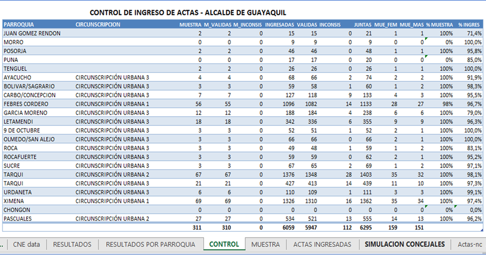
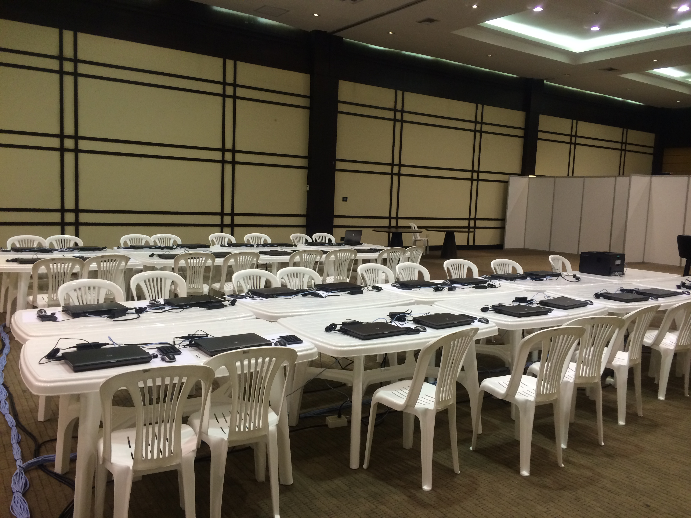
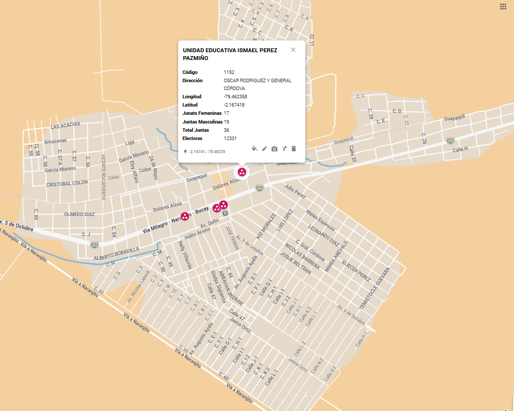

Control tecnológico provincial, conteo rápido, escrutinio propio y defensa técnica del resultado








| Componente | Provincia del Guayas, incluyendo Guayaquil | Solo cantón Guayaquil |
|---|---|---|
| Consultoría, acompañamiento pre/post electoral y sistema en alta disponibilidad | $37.000 | $30.000 |
| Infraestructura integral del centro de control electoral | $15.000 | $15.000 |
| Recargas celulares para transmisión de resultados y coordinación operativa | $400 | $300 |
| Digitadores por turnos | $6.000 | $4.000 |
| Equipo de apoyo operativo en centro de control | $350 | $350 |
| Bebidas y alimentos | $800 | $800 |
| Total estimado | $59.550 | $50.450 |
| Rol | 100% juntas | Conteo rápido | Valor | Subtotal 100% | Subtotal conteo rápido |
|---|---|---|---|---|---|
| Jefe de cantón | 25 | 25 | - | - | - |
| Jefe de parroquia | 64 | 59 | - | - | - |
| Jefes de recinto | 469 | 72 | 35 | 16.415 | 2.520 |
| Delegados de junta | 9.276 | 1.400 | 25 | 231.900 | 35.000 |
| Total | $9.834 | $1.556 | $248.315 | $37.520 |
| Rol | 100% juntas | Conteo rápido | Valor | Subtotal 100% | Subtotal conteo rápido |
|---|---|---|---|---|---|
| Jefe de cantón | 1 | 1 | - | - | - |
| Jefe de parroquia | 20 | 20 | - | - | - |
| Jefes de recinto | 326 | 40 | 35 | 11.410 | 1.400 |
| Delegados de junta | 5.809 | 900 | 25 | 145.225 | 22.500 |
| Total | $6.156 | $961 | $156.635 | $23.900 |